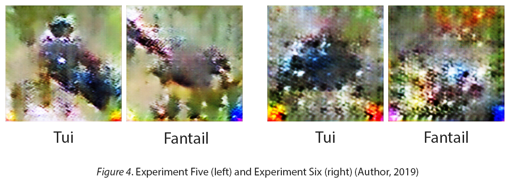

Spect2Bird: Bird sound recognition using spectrograms and pix2pix (PDF)
Stacey Willcox
Abstract
This project acts as proof of concept for the use of spectrograms and pix2pix as a New Zealand bird identification and visualisation tool. Images of bird sound spectrograms were paired with images of birds and trained using pix2pix. Audio files were collected from eBird (https://ebird.org/media/catalog), edited to reduced noise, manually scrubbed for audio events and saved in sections as spectrogram images. Bird images were also collected from eBird and filtered to collect the top 20 images of each bird category, using the criteria of image clarity, exposure of bird, body position and side profile perspective. Tui, Fantail, Bellbird and Rosella were chosen as the final bird for the dataset due their availability of data and variety of visual features. Different combinations of spectrogram and image quantities were tested as well as different bird types, which told us that a high quantity of spectrograms with some variation, and a smaller quantity of bird images with uniformity gave the best results. There are limitations using New Zealand birds as a dataset, as range and availability of quality data can be difficult to find due to the bird populations and scarcity. Results showed that, through the pipeline which this paper outlines, pix2pix can successfully train a model to use spectrograms to identify and visualise birds when given a spectrogram of their vocalisations.
Introduction
Manual bird identification is difficult due to the inaccessibility of birds. Often audio is the only factor to use as birds can be difficult to see or single out in concentrated areas. The use of audio visualisations such as spectrograms have been used in the past for bird identification (Reyes & Camargo, 2015) but not as a means for visualising the corresponding bird. Spectrograms are an effective tool for audio event detection as they communicate each frequency’s energy over time through colour. This provides readable, distinguishable and accurate visual audio data making it an ideal unique representation of a bird for training a model. This paper explains the process, experiments and findings of training a pix2pix (Isola, Zhu, Zhou, & Efros, 2016) model on spectrograms and bird images.
Method
The bird types used in the tests (Tui, Fantail, Bellbird, Eastern Rosella and Saddleback) were chosen based on the availability of data as well as visual consideration such as variety of colour and shape. All birds used can be found in New Zealand bush with the exception of the Macaw which was used as a placeholder visual contrast to the Tui in initial testing.
Bird Images
To build substantial datasets, bird images were sourced from an online user submission database called eBird (https://ebird.org/media/catalog). Media was organized by bird type as well the option of sorting by image/audio quality, location, date, contributor, rating and more specific bird details such as sound, sex or age. Location and quality were the only filters utilised within bird types in order to find high quality bird image and sounds sourced in New Zealand. Initial experiments also used images from New Zealand Birds Online (http://nzbirdsonline.org.nz/) and Flickr (https://www.flickr.com/) to increase quantity and variety. Each dataset was manually filtered before it was used for training but as experiments went on, filtering became more precise and included more factors to consider. Initially, only unrelated images that were collected from the websites were removed, but to make the dataset more uniform, half concealed birds or ones with low contrast to the background were removed as well as birds too far from the camera. The final dataset uses only images of birds positioned in the centre and facing the left to maintain uniformity for clearer results. These were selected by the clarity of the bird as well as the non-dominating backgrounds and side profile position. Images for the final dataset were edited in Photoshop to have the birds of each body position aligned by their eyes and flipped horizontally to face the same direction. A coloured square in the bottom right was added to each bird image, with each bird type having a corresponding colour as a clear signifier of successful or unsuccessful results.
Bird Spectrograms
Audio files were also collected from New Zealand Birds Online initially but the majority were sourced from eBird using the same filters as the image search. Each audio file was opened in Adobe Audition in the spectrogram viewer and manually skimmed for notable audio events. To ensure the spectrogram scale was consistent across all data, files were first scaled to show 16 seconds on the screen and unwanted noise was then reduced from the file to increase clarity and definition. The file was scrubbed visually while listening to the audio to ensure the spectrograms being collected were from the correct bird. The spectrograms were then screenshotted in sections at a consistent size with the main audio event in the centre of the image. Most audio files produced more than one spectrogram screenshot. Both the spectrograms and the bird images were resized to 256x256 pixel squares to be consistent with the pix2pix criteria. Spectrograms were paired with a corresponding bird image as one image and trained by pix2pix (Figure 1). Test data, made from pairs with spectrograms the model has never seen before, was run through the model to generate synthesised bird images based on the spectrogram. These images can then be analysed to judge the accuracy of the identified bird.
Experiments
The first experiment consisted of only two bird types in order to test the plausibility of the concept. It consisted of 338 pairs broken into 169 images of each Macaw and Tui paired with 17 spectrograms. Spectrograms were repeated until each bird image was paired with one. The test data results (Figure 2), showed clear colour differentiation between the red Macaw and black/blue of the Tui generated images (there were no other recognizable bird features), proving that the model is able to tell a Macaw spectrogram from a Tui spectrogram.
The next experiment used 300 pairs, 150 each of Kaka (paired with 10 spects) and Tui (paired with 15 spects). The difference in spectrogram amounts was used to see how this factor would affect the results. The generated images (Figure 2), were hard to tell apart which could be due to lack of dramatic visual differences between a Kaka and Tui or the quality of the new dataset. The next test used less pairs, less spectrograms and had the background of the bird image removed. This showed no improvement in displaying a recognizable bird (Figure 3). A test that had seven spectrograms each paired with the same set of 100 birds had similar results (Figure 3). The conclusion from these was that more spectrograms are required for the model to learn.
Due to murky image results, a coloured square was added to the bottom right of the bird image with each bird type having its own colour. This allowed for results to be understood by the colour of the square on the generated image if the image is unclear. This method was tested on a dataset of 5 bird types, each with 50 spects paired with the same image in order for results to be recognizable as birds. The results were mixed (Figure 4), with four out of the five bird types being successful majority of the time but more test data was required to judge its success.

The final test used the four successful birds from the previous test, Tui, Bellbird, Eastern Rosella and Fantail with 50 spects and 100 different bird images for each. The results demonstrated that too much bird variation produces confusing results (Figure 4).
From these experiments it was decided that less bird images and more spectrograms provide a better dataset for spectrogram recognition, uniform bird images are key to having clear results and including a key or signifier allows for clearer and quicker analysis of results. The final dataset consisted of four bird types, with each bird having 50 spectrograms and 20 images. Each image was paired with all 50 spectrograms resulting in 1000 images for each bird and 4000 images total in the dataset. Each bird image was edited to have uniform positioning as described in the method. This dataset produced very successful results (Figure 6).
Results
Some notable results from the final model show how the vocalisation similarities of a Bellbird and a Tui can be represented by a hybrid bird (Figure 5). Generally, the images are very clearly one type of bird but there was the occasional cross over. This demonstrates an unintentional visual feature of the results that may be a useful tool for recognizing similarities across bird calls. It may also be useful as a way of classifying unidentified bird sounds. Some less defined spectrograms resulted in less defined birds and combinations. This is where the coloured square is beneficial to have as a tool as it more clearly communicates which birds the model is combining.
Discussion
The final model can complete successful bird identifications of a Tui, Fantail, Bellbird and Eastern Rosella when given a spectrogram of those birds sounds with very few mistakes and produce recognizable bird images. At a larger scale, this model would allow for nationwide bird identification as well bird appearance predictions of unknown bird sound inputs. There are limitations due to the availability of audio and visual data, especially for some native New Zealand Birds although this concept is not limited to birds. This is a proof of concept for using pix2pix and spectrograms for species identification and visualisation. There is also the possibility of a reverse pipeline. Using the same process, spectrograms could be generated from bird images and converted back to an audio file, allowing for bird vocalisations to be experienced from only an image input.
References
Isola, P., Zhu, J.-Y., Zhou, T., & Efros, A. A. (2016). Image- to-Image Translation with Conditional Adversarial Networks. ArXiv. Retrieved from http://arxiv.org/abs/1611.07004
Reyes, A. K., & Camargo, J. E. (2015). Visualization of audio records for automatic bird species identification. 2015 20th Symposium on Signal Processing, Images and Computer Vision (STSIVA), 1–6. https://doi.org/10.1109/STSIVA.2015.7330415